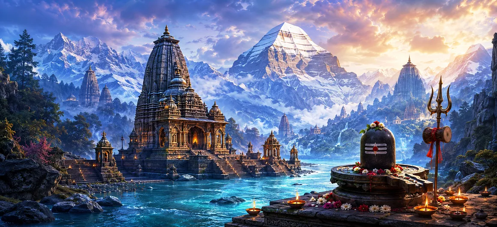

Sacred Places of Lord Shiva
ভগবান শিবের পবিত্র স্থানসমূহ
The sacred world of Lord Shiva is not limited to temples. Mountains, rivers, forests, caves, ancient cities and pilgrimage paths have all become part of the living geography of Shiva devotion.
A sacred place becomes more than a destination when the devotee approaches it with reverence. The journey can become a movement from noise toward silence, from restlessness toward remembrance, and from outward travel toward inner pilgrimage. Across India and the Himalayan world, countless places preserve stories of Mahadeva, Parvati, sages, devotees and ancient worship.
Four Faces of Shiva's Sacred Geography
Mountains
Kailash, Kedarnath and Himalayan shrines evoke Shiva as the silent Mahayogi, beyond worldly distraction.
Rivers
The Ganga and Narmada connect Shiva worship with purification, grace, pilgrimage and sacred flow.
Sacred Cities
Kashi, Ujjain, Bhubaneswar and other cities preserve generations of living Shaiva worship.
Caves and Forests
Remote caves and forests reflect Shiva's ascetic character, solitude, freedom and inward meditation.
Sacred Cities
Ancient cities such as Kashi, Ujjain, and Bhubaneswar preserve centuries of Shiva worship, temple traditions, sacred festivals, and devotional life.
Pilgrimage Paths
The roads to Shiva's sacred places are themselves part of the spiritual journey, teaching patience, humility, endurance, remembrance, and surrender to Mahadeva.
Sacred Places to Explore
Mount Kailash: The Abode of Mahadeva
Mount Kailash occupies a unique place in the sacred imagination of Shiva. It is revered as the divine mountain associated with Lord Shiva and Goddess Parvati, and its extraordinary Himalayan setting has made it a symbol of transcendence, silence and spiritual height. The mountain is not simply remembered for its physical grandeur. It represents the still centre of the yogic universe, where the restless mind is invited to become quiet.
For the devotee, remembrance of Kailash can become a daily inner pilgrimage. One need not stand upon the mountain to contemplate what it represents: detachment, purity, endurance, silence and the unshaken presence of Mahadeva.
Lake Manasarovar: Sacred Waters
Near the sacred Himalayan world of Kailash lies Lake Manasarovar, a place remembered through centuries of pilgrimage and spiritual aspiration. Its waters, immense sky and mountain surroundings create a powerful atmosphere of contemplation. In devotional imagination, sacred water is more than a physical element. It represents cleansing, renewal and the possibility of beginning again with a purified heart.
Together, Kailash and Manasarovar form a sacred landscape in which mountain and water meet. The combination reminds the devotee that spiritual life needs both stillness and flow: the stillness of meditation and the flowing grace of remembrance.
Kashi and the Ganga: The City of Shiva
Kashi is one of the most important sacred cities associated with Lord Shiva. The city is inseparable from the worship of Vishwanath and the presence of the Ganga. Its ghats, bells, lamps, temples, chants and continuous devotional life create a landscape in which ordinary life and sacred remembrance exist together. Kashi teaches the devotee to remember the divine in the midst of birth, work, aging, death and renewal.
The Ganga adds another dimension. The river flowing beside the city becomes a visible symbol of grace and purification. The sacred relationship between Shiva, Kashi and Ganga has made this region one of the most enduring centres of Shaiva devotion.
Amarnath: The Cave of Sacred Remembrance
The Amarnath cave is one of the most celebrated Himalayan pilgrimage places connected with Shiva. The sacred tradition of the cave centres on the naturally formed ice lingam seen during the pilgrimage season. The difficult mountain journey itself becomes part of the devotional experience, asking the pilgrim for patience, discipline, endurance and faith.
Amarnath therefore carries a message beyond the destination. The devotee travels through difficulty while repeating the name of Shiva, learning that faith can transform hardship into an offering.
Kedarnath: Shiva in the Himalayas
Kedarnath stands amid a dramatic Himalayan landscape where the presence of the mountains naturally encourages humility. Shiva is worshipped here as Kedarnath, and the pilgrimage has become one of the most powerful expressions of Himalayan Shaiva devotion. The long journey to the shrine can be understood as a discipline of body, mind and faith.
The quietness of the region also reflects the yogic nature of Shiva. The pilgrim is invited to leave behind unnecessary distractions and to approach Mahadeva with a simpler, steadier heart.
Srisailam: Mountain, Forest and Mahadeva
Srisailam is a major sacred landscape of southern India associated with the Mallikarjuna tradition of Shiva. Its hills, forests, river and ancient temple culture give the region a distinctive devotional atmosphere. Here the natural world and sacred worship appear closely connected.
Srisailam reminds the devotee that Shiva can be approached through the temple and through the landscape surrounding it. The forested hills become part of the spiritual setting, encouraging reverence for creation and contemplation of the Lord.
Ujjain and Mahakala: Lord of Time
Ujjain is an ancient sacred city whose Shaiva identity is deeply connected with Mahakala. Shiva as Mahakala invites reflection on time, mortality and the imperishable reality beyond changing circumstances. The city has long been a centre of pilgrimage, temple worship and sacred learning.
The sacred lesson of Mahakala is powerful: time moves continuously, but remembrance of Shiva can become an anchor. The devotee learns to live responsibly in time without forgetting the timeless.
Rameswaram: Where Devotion Meets Devotion
Rameswaram is a major pilgrimage centre where the traditions surrounding Rama and Shiva meet in a deeply devotional landscape. The Ramanathaswamy temple and the sacred waters of the island form a powerful setting for prayer, ritual and remembrance.
Its significance also teaches a beautiful principle of Hindu devotion: different divine stories and devotional paths can meet without losing their sacred identity. At Rameswaram, reverence for Shiva becomes part of a larger culture of surrender and dharma.
Chidambaram: Shiva as Nataraja
Chidambaram is celebrated as a sacred centre of Shiva Nataraja, the Cosmic Dancer. Here Shiva is experienced not only as the silent ascetic but also as the dynamic principle whose dance expresses the rhythm of the universe. The sacred atmosphere of the temple has inspired worship, music, dance, sculpture and philosophical reflection.
The devotee can contemplate an important truth here: stillness and movement are not enemies. Shiva can be the unmoving consciousness and the divine dance at the same time.
Jageshwar: Shiva Among the Deodar Forests
Jageshwar is a Himalayan temple landscape surrounded by deodar forests and mountain silence. Its collection of ancient Shiva shrines creates a strong sense of continuity between nature, worship and sacred architecture. The atmosphere invites a quieter form of pilgrimage, where the surrounding forest becomes almost part of the prayer.
Jageshwar reminds the devotee that sacredness does not always need noise or grandeur. Sometimes the quiet sound of wind through trees can deepen remembrance of Mahadeva.
Gokarna: The Coastal Presence of Mahabaleshwar
Gokarna is a coastal pilgrimage town strongly associated with Shiva and the Mahabaleshwar tradition. The meeting of sea, hills, temples and sacred stories gives the region a distinctive atmosphere. Pilgrimage here allows the devotee to encounter Shiva within a landscape that feels open, elemental and ancient.
The sacred character of Gokarna shows how pilgrimage can bring together the elements of nature with the living tradition of worship. The ocean suggests vastness, the hills suggest steadiness, and the temple provides a centre for remembrance.
Narmada and Omkareshwar: The Sacred River Path
The Narmada has a profound place in India's sacred geography, and Omkareshwar gives the river an especially strong connection with Shiva worship. The riverbanks hold temples, pilgrimage routes and places of spiritual practice. The movement of the river provides a natural image of continuity and grace.
The long traditions of pilgrimage along the Narmada teach endurance and remembrance. A river does not hurry, yet it continues. In the same way, the devotee is encouraged to keep walking, praying and remembering Shiva without losing heart.
What Sacred Places Teach the Devotee
Pilgrimage Is Inner Travel
The deepest pilgrimage is the movement of the heart toward humility, remembrance and surrender.
Nature Can Become Prayer
Mountains, rivers and forests can awaken reverence when the mind learns to see the sacred in creation.
Remember Shiva Everywhere
A sacred place can teach us to carry remembrance home instead of leaving devotion behind at the shrine.
Many Places, One Mahadeva
Different regions preserve different traditions, yet the heart of devotion repeatedly turns toward Shiva.
Humility Before the Sacred
A great pilgrimage reminds the traveller that sacredness is approached through respect rather than possession.
Bring the Light Home
The true fruit of pilgrimage is to return with a calmer mind, kinder conduct and deeper remembrance of Mahadeva.
“Where the heart remembers Shiva with sincerity, that place becomes a sacred place.”
🔱 Om Namah Shivaya 🔱From Sacred Places to Shiva and Shakti
The sacred geography of Shiva naturally leads toward the mystery of Shiva and Shakti: consciousness and power, stillness and creative energy, the eternal Lord and the Divine Mother.
🌺 Explore Lord Shiva and Goddess ShaktiFrequently Asked Questions
What makes a place sacred in the Shiva tradition?
Its connection with Shiva's stories, worship, sacred geography, saints, pilgrimage, natural features or generations of sincere devotion can give a place profound sacred meaning.
Is pilgrimage only about visiting a famous temple?
No. Sacred pilgrimage can include mountains, rivers, caves, forests, ghats and quiet places of remembrance. The inner attitude of the traveller is as important as the destination.
What should a devotee bring back from a sacred journey?
The greatest return is not an object. It is renewed remembrance, humility, gratitude, patience and the determination to live with Shiva in one's heart.